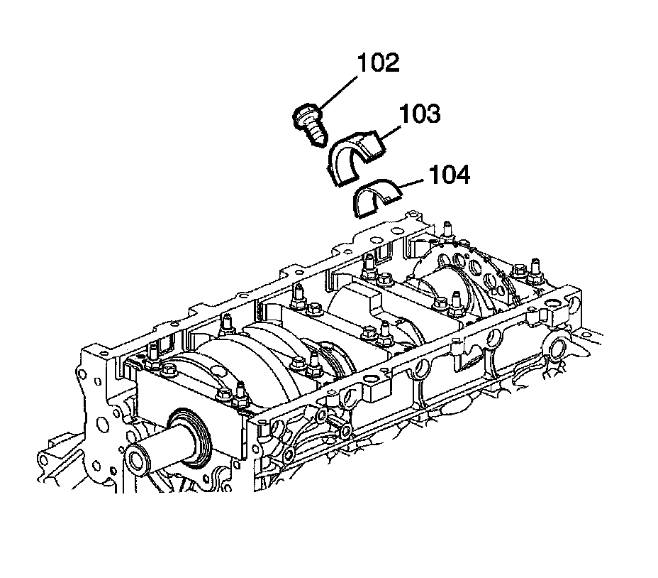
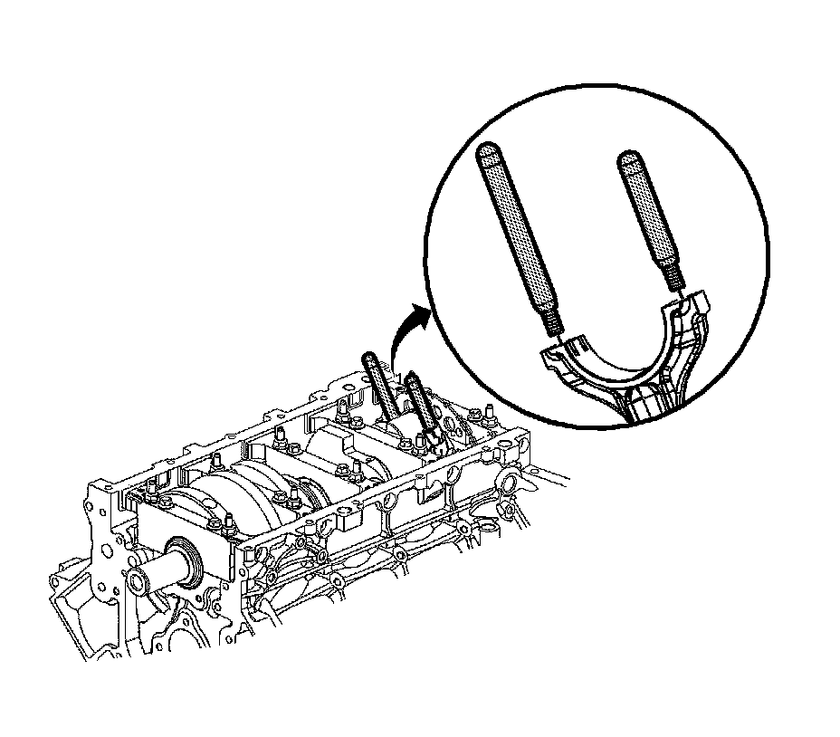
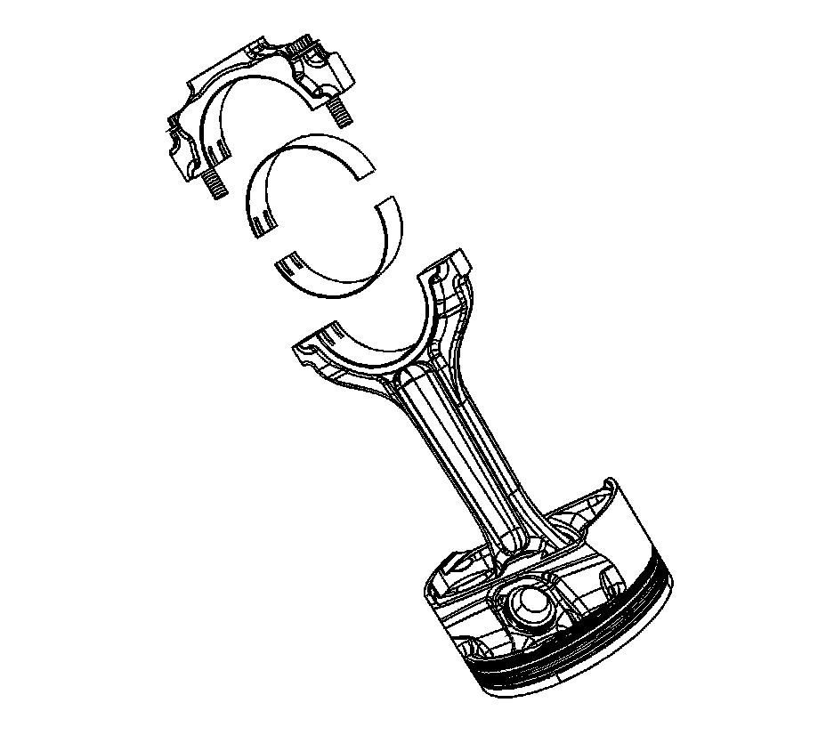

29. Piston, Connecting Rod, and Bearing Removal
Piston, Connecting Rod, and Bearing Removal
Tools Required
^ J 24270 Cylinder Bore Ridge Reamer
^ J 41556 Connecting Rod Guide
1. Use the J 24270 in order to remove the cylinder bore ring ridge, if required.
1. Turn the crankshaft until the piston is at the bottom of the stroke.
2. Place a cloth on top of the piston.
3. Use the J 24270, or equivalent, in order to remove a cylinder ring ridge.
4. Turn the crankshaft so the piston is at the top of the stroke.
5. Remove the cloth.
6. Remove the cutting debris from the cylinder and piston.
2. Using a paint stick or etching tool, place matchmarks or numbers on the connecting rods and the connecting rod caps. The connecting rods and caps MUST be assembled to their original position and direction.
^ A stamping mark on the side of the connecting rod, at the crankshaft journal, may affect component geometry.
^ Mark the top of the piston to the specific cylinder bore.

Important: Mark, sort, or organize the connecting rod bearings so they may be installed to their original position and location. The connecting rods and the bearing caps are NOT interchangeable. Refer to Separating Parts.
3. Remove the connecting rod bolts (102), cap (103) and bearing (104).

4. Install the J 41556 to the connecting rod.
5. Using a hammer, tap lightly on the end of the J 41556 in order to remove the piston and connecting rod assembly from the cylinder bore.
6. Remove the J 41556.

7. Upon removal of the piston and connecting rod assembly, assemble the connecting rod cap and bolts onto the matching connecting rod.